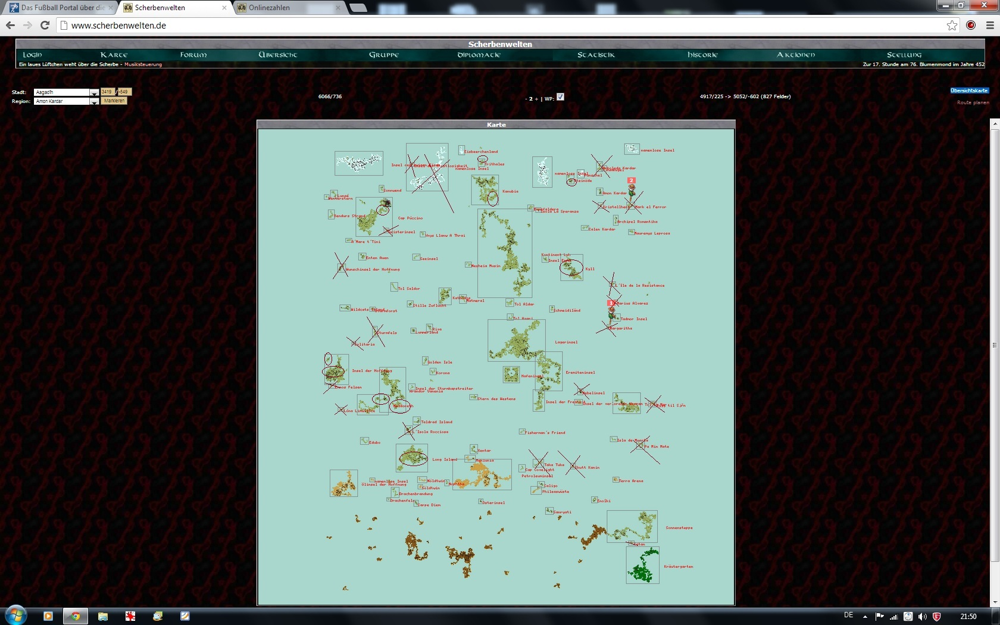

| Übersicht,
Allgemeines |
|
Inseln zu verschenken?
|
| Gwydion de Ville (RIP) |
Ich habe mir mal den Spass gemacht und alle Inseln, die laut Karte unbewohnt sind (unter 100 Einwohner) auf einem Bild man durchzustreichen. Lücken bei großen Inseln bzw. Mino Gebiet habe ich eingekreist. Sprich Inseln die kein Mensch mehr braucht und die man genauso gut "Löschen" könnte ;o)
Viel Spaß damit!
 |
06.10.12 22:48

|
|
| Cyrik (RIP) |
vielen Dank für die Mühe, hat mich immer schon mal interessiert. |
06.10.12 22:53
|
|
| Ceara Duana (RIP) |
hm... Zwischenanleger sind doch oftmals nicht verkeht, vorallem wenn man sich hinsichtlich seiner Schiffroute nicht ganz so sicher ist...
Trotzdem sehr interessant. |
06.10.12 23:12
|
|
| Cordelia deLor (RIP) |
... mich wundert long island. vor allem da wo der kreis eingemahlt wurde |
07.10.12 21:14
|
|
Fabius Alagos
 |
Mich wundert, dass der liebe Gwyd in der Lage ist eine derartige Emsigkeit an den Tag zu legen, wo man doch bereits glauben mochte die Zunge sei ihm am Gaumen angetrocknet :)
Kleinere Scherbe...ja warum nicht, aber wird doch wieder Geheule geben, warum so und nicht so...und da wollte ich doch gerade einen Tunnel graben. Die langen Distanzen sind in Zeiten des immensen Reichtums nicht mehr so von Belang. Die Leute die gerne viel Aktion haben siedeln eh in den zwei Ballungszentren und diejenigen die ihre Ruhe möchten haben auch genug zur Auswahl. Letztendlich ist meiner Ansicht nicht die Größe der Scherbe Schuld an der Langeweile, sondern einfach die mangelnde Organisation der Spielerschaft sich entsprechend der Neigungen einzurichten. |
07.10.12 21:34
 |
|
Lyra Callionymus
 |
Es schadet nichts wenn die Inseln zeitweilig unbewohnt sind. So können sich die Fische wieder vermehren.
|
07.10.12 22:12
|
|
| Chevonne (RIP) |
Müsste es nicht "Inseln zu versenken" heißen? *g* |
07.10.12 23:17
|
|
| Aywen (RIP) |
Was ist denn mit Mittelloh? Da sind auch etliche große Lücken... |
08.10.12 7:29
|
|
| Gwydion de Ville (RIP) |
Tja, Fabs. Ich hab seit meiner Beförderung wieder etwas mehr Zeit ;o)
Ansonsten ist die Karte sicherlich nicht perfekt, sondern primär an dem was die Karte anzeigt orientiert. Zu detailliert wollte ich auch nicht werden.
Long Island sollte das Mino-Gebiet eingekreist sein. |
08.10.12 20:40
|
|
| Seth von Coa Lith (RIP) |
Danke dir Cwydion endlich einen Karte wo man ohne viel kraft aufwand sonder waren ernte kann danke dir. |
09.10.12 15:58
|
|
Frathag Graubart
 |
Loh und die Sonnensteppe waren mir auch sofort ins Auge gefallen. Die Karte und die Entfernungen waren, verglichen mit der Beta, auch von Anfang an zu groß. Ich erinnere mich auch dunkel, dass ursprünglich nicht mit der großen Spieleranzahl gerechnet worden war, die aus der Beta mit hinüber kam in das Bezahlspiel, und Teile der Inseln zum Versenken vorgesehen waren. Die Idee wird mit Aronius´ Weggang gestorben sein. |
12.10.12 10:05
|
|
Klaus Störtebeker
 |
Ja, daß mit nur rund 2-300 Spielern gerechnet worden sei, meine ich mich auch zu erinnern - alledings nicht, daß Inseln zur Versenkung vorgesehen wären (warum auch, hätte man die Fläche dann doch gleich geringer zur Verfügung gestellt), sondern ganz im Gegenteil: bisher unbewohnbare Inseln (die Lavainseln im Süden) würden bei Bedarf bewohnbar gemacht ^^ |
12.10.12 15:52
|
|
| Aschimedes (RIP) |
Mein nettes Städtchen ist eingekreist :(? |
23.10.12 16:11
|
|
Melisandra
 |
meine 25o.ooo Einwohner auf der Insel der Hoffnung sind auch eingekreist ... |
29.10.12 11:02
|
|
| Spartacus (RIP) |
Melisandra nicht aufregen der muss die Karte nochmal genauer studieren.;) |
11.11.12 9:22
|
|
| Gwydion de Ville (RIP) |
wer lesen kann ist klar im Vorteil :) |
11.11.12 11:56
|
|
| Vantress (RIP) |
Das schöne "Monster-Hau-Und-Spiel-Gebiet" im Süden Kanubias ist nicht so leer, wie es scheint... Man baut ja auch nicht sein Haus neben der Bärenhöhle ;)
Aber schicke Karte. |
15.11.12 21:13
|
|
Übersicht,
Allgemeines
|